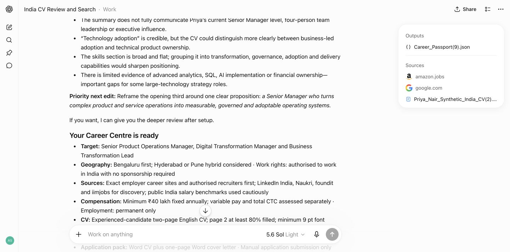
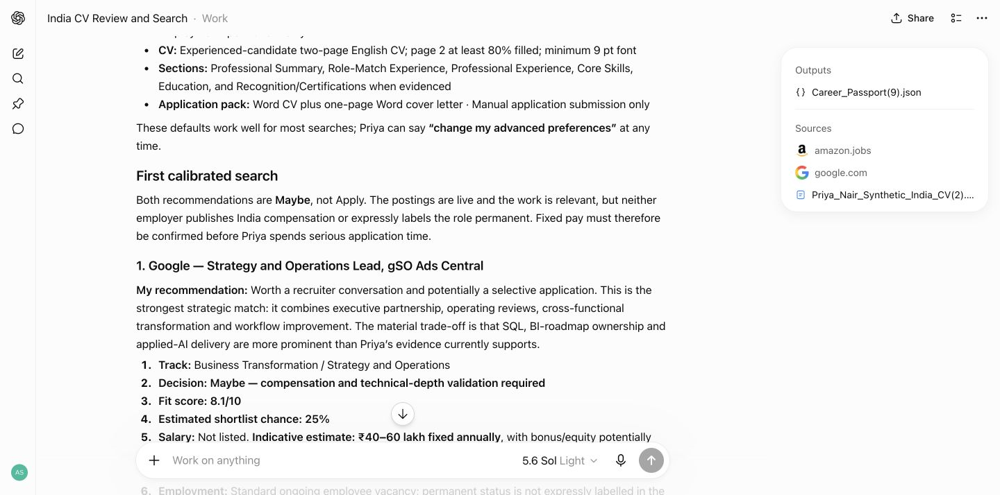
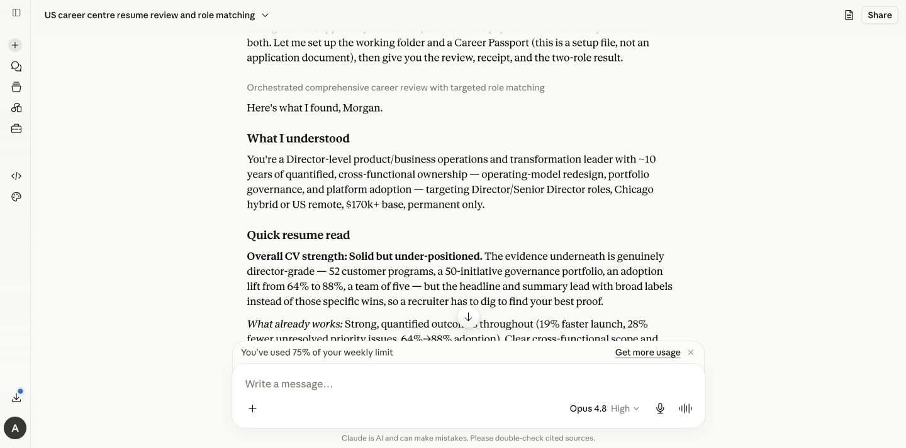
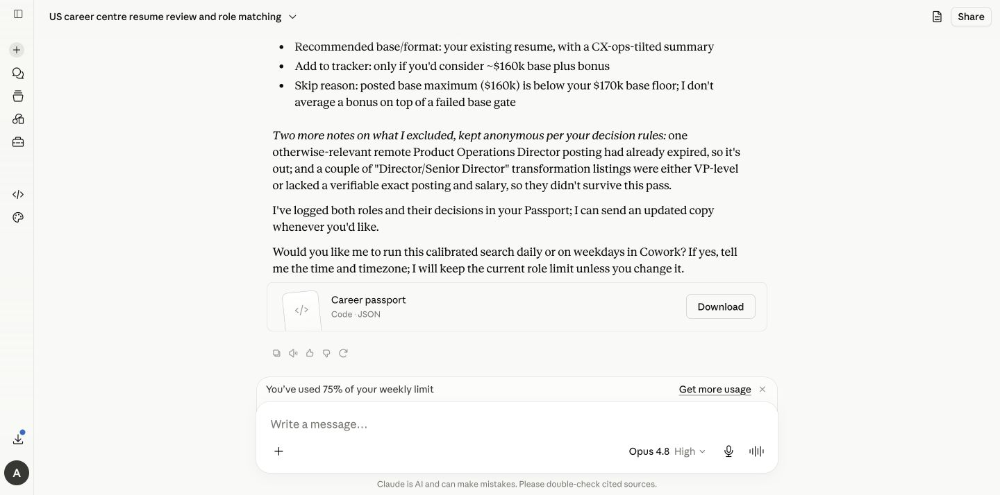

See how it works
One career conversation.
Two familiar places.
Career Centre works inside ChatGPT or Claude. Install once, share your CVs, then talk normally. It reviews before it searches, explains every recommendation and helps you turn a good first run into a routine.
No new account, API key or Career Centre subscription.
Choose your AI
Follow the path you will actually use
The outcome is the same. Scheduling works a little differently in each provider.
ChatGPT route
Install once. Start in Work.
A Work task gives Career Centre the best route from your first search to a recurring Scheduled task. A normal chat still works for one-off help. Scheduling requires an eligible ChatGPT plan and account.
-
1
Install
Add Career Centre from Plugins
Search for Career Centre, open the result by Amit Sharma and choose Install. If it is already installed, choose Try in chat.
You only install the plugin once.

The live Career Centre page in ChatGPT. -
2
Start
Say one natural sentence
Open a Work task and say “Help me find my next role.” Career Centre asks for one CV or the key versions you use for different career directions.
You@Career Centre Help me find my next role.
Career CentrePlease share your latest CV. If you use different CVs for different directions, send the key versions together and label each one.
-
3
Understand
Get the broad CV review first
Before job hunting, it explains what already works, what may be underselling you and the highest-value next edit. It offers a deeper review without forcing a hard score.

Real synthetic-user CV review in ChatGPT. -
4
Calibrate
See exactly what it will assume
The readiness receipt confirms target roles, geography, sources, work rights, salary, CV length, sections and the application-pack format. Change anything in normal language or keep the defaults.

The ready receipt appears before the calibrated search. -
5
Decide
Get judgment, not a link dump
Each role includes the exact posting, fit, likely shortlist chance, salary basis, employment type, the main match, the main risk and the best CV angle.

A real role decision with transparent reasoning. -
6
Automate
Turn the useful search into a routine
After the first good run, Career Centre should ask whether you want it repeated. Reply with the cadence and your local time; ChatGPT Work can create the Scheduled task for you when your plan supports it.
The prompt you should see“Want me to make this search automatic? I can create a Scheduled Career Centre task here for daily or weekday runs.”
Use your own local time and timezone wherever you live.
Monday to Friday
9:00 AMlocal time exampleNew or materially changed matches only
Ready to schedule -
7
Apply
Receive the finished Word pack
For a role you choose, Career Centre prepares an evidence-safe CV and cover letter, checks the structure and keeps application submission in your hands.

 DOCX
DOCX
Claude route
Upload once. Talk normally.
Use a regular Claude conversation for one-off work. Use Cowork when you want Claude to repeat the search on a schedule. Scheduling requires an eligible Claude plan and account.
-
1
Download
Get the current ZIP from Google Drive
Open the Career Centre Claude plugin file and choose Download.
Save the ZIP. Do not unzip it.
-
2
Install
Upload the Career Centre ZIP
In Claude, open Settings, Customize, Plugins, Add plugin, Upload plugin, choose the ZIP and switch Career Centre on.
Do not upload it every day. Install once, then reuse it in Claude.

Open Customize → Plugins 
Add plugin → Upload plugin -
3
Start
Ask for the outcome you want
Say “Help me find my next role.” Claude should invoke the skill naturally. If it does not, type /career-centre once.
You/career-centre Help me find my next role.
Claude + Career CentreI’ll start with your CV, reflect back what I understand, then ask only the few choices needed to calibrate the search.
-
4
Review
Get the same mentor-style reflection
Claude reviews your positioning, evidence and gaps before asking you to choose a direction. It also confirms whether you are actively looking or only passively open, then raises the matching bar for passive searches.

Real Career Centre CV review in Claude. -
5
Automate
Move the recurring search to Cowork
Claude scheduling uses Cowork. Career Centre prepares a copy-ready /schedule handoff with your confirmed preferences; open Cowork, paste it and approve the schedule.
The handoff you should see“Want this repeated? Open Cowork and paste the /schedule prompt below. Nothing will be scheduled until you approve it.”

The tested Claude scheduling handoff. -
6
Continue
Carry the useful memory, not the setup burden
Keep one main conversation and save the latest Career Passport. If you start a fresh conversation, attach that Passport and any new CV evidence. The plugin itself stays installed.
Career_Passport.json
- Confirmed preferences
- Evidence-safe career story
- Search calibration
- Role and application history
Same centre, small provider difference
What changes between ChatGPT and Claude?
You are one sentence away
Start with “Help me find my next role.”
Career Centre will guide the rest, including the option to automate after the first useful run.